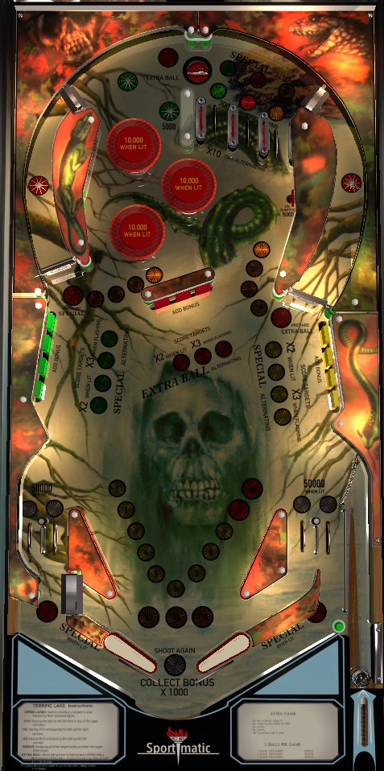

Shoot the right spinner to reach the top lanes, which each score their own independent increasing value. Making any single top lane 5 times in one ball jumps the bonus multiplier straight to the maximum of 10x. Drop targets advance bonus; they are lit by making a top lane once, and subsequent completions increase the 2x score on a bank to 3x, extra ball, or Special. Spinners score 1,000 per spin and change what the opposite orbit award is; if you shoot the left spinner until ? is lit on the right, every right orbit shot gives a mystery award that can be up to 100,000 points or a free extra ball or Special.
The below picture of Terrific Lake's playfield was taken from the VPX recreation by JPSalas et al.

There is no skill shot, but a plunged ball will arc across the playfield and may be able to go through the left spinner and up the left orbit. This is not always the case, even on a full plunge, so pay attention to the trajectory of a plunged ball.
The three top lanes are best accessed via the right orbit, though any shot to the top of the table has a chance to rattle around and go through one. The lanes are green, red, and yellow from left to right. Making a lane qualifies the corresponding bank of drop targets- green for the left bank, red for the center bank, and yellow for the right bank. Making a top lane also scores and advances the lit value: 10,000, 20,000, 30,000, then 40,000 points. Making a lane lit for 40,000 points resets that lane to its initial value of 10,000, lights 10x Bonus if it is not already lit, and starts Roving Special. During Roving Special, one top lane is lit at a time, alternating every few seconds. Here, unlit top lanes score (but do NOT advance) whatever value they had before Roving Special started, and making the lit top lane scores an instant Special and returns the top lanes to normal operation. There is no flipper lane change of any kind during any part of this process.
The three drop target banks are in one of four states at any time.
The spinners at the front of both orbits always score 1,000 points per spin. Behind each spinner is a star rollover, which collects the award that is lit near that spinner. Each spin of a spinner rotates which award is lit at the opposite orbit.
The left orbit values, which are changed by the right spinner, are:
The right orbit values, which are changed by the left spinner, are:
Bonus multipliers cannot stack or be downgraded. If you already have 10x bonus lit by making any single top lane 4 times, the 2x and 5x bonus orbit awards are worthless.
Bumpers score 1,000 points when not lit, or 10,000 when lit. At the start of each ball, all three bumpers are unlit. To light one bumper, hit the 5,000 points and On Bumpers target just below the yellow top lane, or hit a 30-point wall switch anywhere in the game. The most common 30-point wall switches are just below the On Bumpers target, or the slingshots. When a bumper is lit, any 30-point wall switch rotates which bumper is lit. It is not possible to have more than one bumper be lit.
Scores 15,000 points and kicks the ball out to one side. It appears to be adjustable whether the top saucer kicks the ball left toward the star rollovers or right toward the top lanes. If Prepare Extra Ball has been collected from the right orbit, the top saucer will be lit for extra ball as well.
The green star rollovers above the bumpers score 5,000 points. Pressing one will light one in or out lane at the bottom of the table to score 50,000 points instead of 5,000. If you press a green star rollover again right away, it will move which bottom lane(s) are lit for 50,000. If you make the top saucer first, the next press of a green star rollover will light another bottom lane for 50,000 points. It is possible to light all 4 in/out lanes for 50,000 points in this way.
On the left of the table bottom, the in and out lane are reversed, with the in lane being at the left edge of the table and crossing over the out lane. This allows an out lane ball to potentially be nudged back into play, or an in lane ball can choke up at the intersection and fall out.
The right side of the table bottom is in conventional order, with the out lane being at the edge of the table. At the bottom of the right out lane is a post with a large rubber ring on it. A ball that goes down the right out lane very quickly has a chance to bounce off the post, come all the way back up the right out lane, and re-enter play.
Slingshots score 30 points and are passive wall switches that do not actively kick the ball away. This detail is recreated incorrectly on the most recent VPX recreation of Terrific Lake at time of writing.
Bonus is advanced by hitting any drop target or making any in/out lane. 2x bonus is earned as a left orbit award; 5x bonus is earned as a right orbit award; 10x bonus is earned by making any of the game's three top lanes 4 times in a single ball. Max bonus is 10x 39,000 = 390,000 points, and is only significant if the 10x multiplier is earned. There is no bonus holdover of any kind and there is no mid-ball bonus collect.
There is a maximum of 1 extra ball per ball in play, but Specials are uncapped. There does not seem to be a point value that extra balls or Specials can be set to award instead.